ORCID: 0000-0002-3516-3788
ORCID: 0000-0002-3516-3788 Google Scholar
Google Scholar ResearchGate
ResearchGate IEEE Collabratec
IEEE Collabratec LinkedIn
LinkedIn GitHub
GitHub FaceBook
FaceBook YouTube
YouTubeDownload
I. Spatial Acoustics Library for MATLAB (SALM)
The spatial acoustics library for MATLAB (SALM) contains a collection of Matlab functions and scripts for spatial acoustic signal processing and spatial audio processing.
The GitHub repository of this project is available at https://github.com/cesardsalvador/SpatialAcousticsLibraryMATLAB.
If you use any script, function, or dataset available in this repository, please cite SALM as below:
DOI: 10.5281/zenodo.10648288
II. Dataset of near-distance head-related transfer functions
The head-related transfer functions (HRTFs) are linear filters describing the transmission of sound from a point in space to the eardrums of a listener. They describe the acoustic filtering properties of the listener's external anatomical shapes such as their torso, head, and outer ears. The HRTFs contain spatial information used by the listener to locate the source of a sound and constitute a major tool in spatial sound technology for personal use.
Obtaining HRTFs for sound sources at reaching distances is important to increase the realism and naturalness when presenting sounds in the peripersonal space. A dataset of near-distance HRTFs is being constructed as part of the JSPS Project “Perceptual Constancy in Spatial Hearing” (JP17K12708).
Currently, four models of listeners' heads compose the HRTF dataset: two generic models captured by laser scanning and two individual models captured by magnetic resonance imaging. Circular and spherical distributions of point sources around the heads, at distances ranging from 10 cm to 100 cm, spaced 1 cm, are being considered. HRTFs are calculated using the boundary element method (BEM) in the frequency domain. The BEM solver runs on the scalar-parallel supercomputer of the Cyberscience Center, Tohoku University. Results are stored as free-field head-related impulses responses (HRIRs) in the time domain.
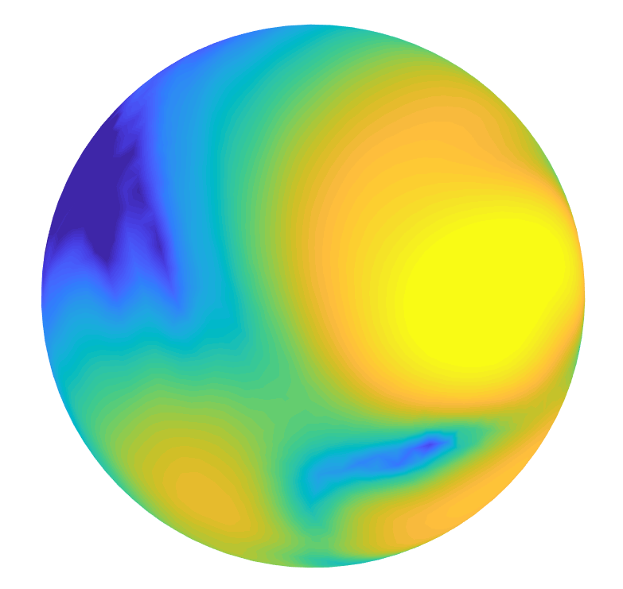 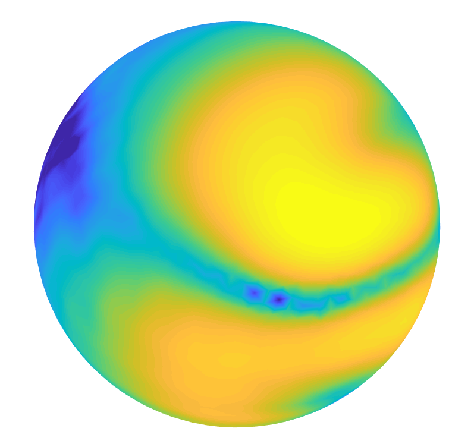 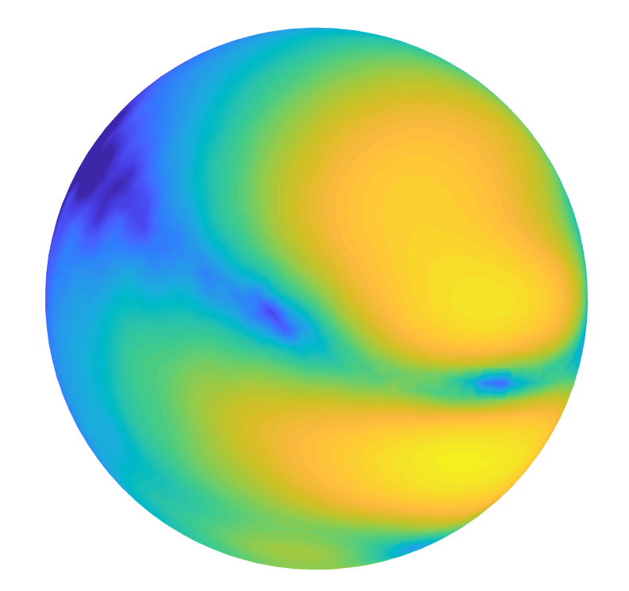 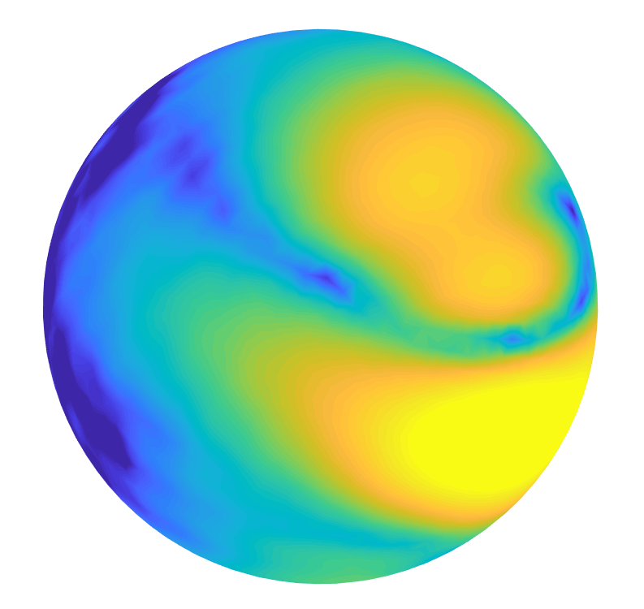
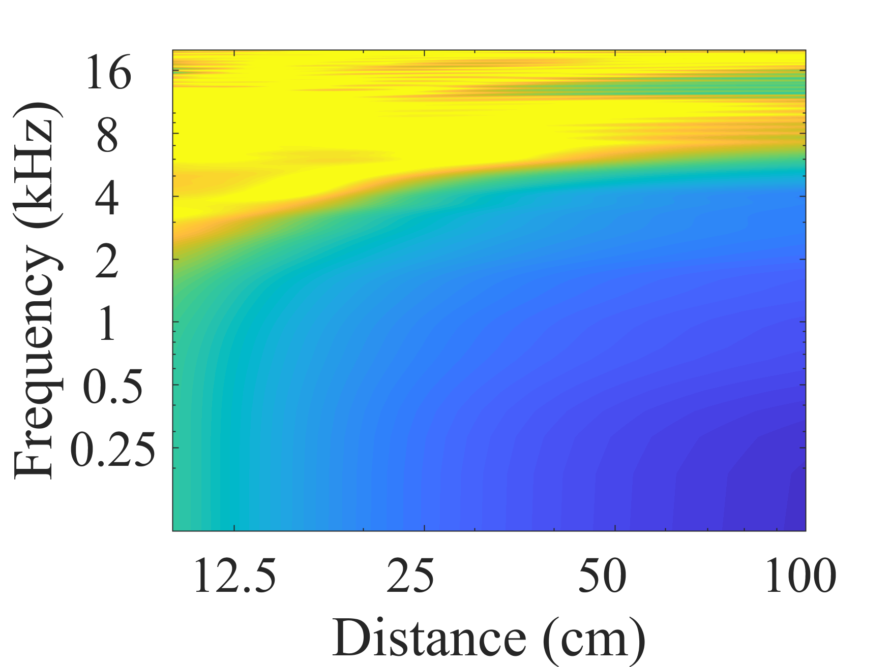 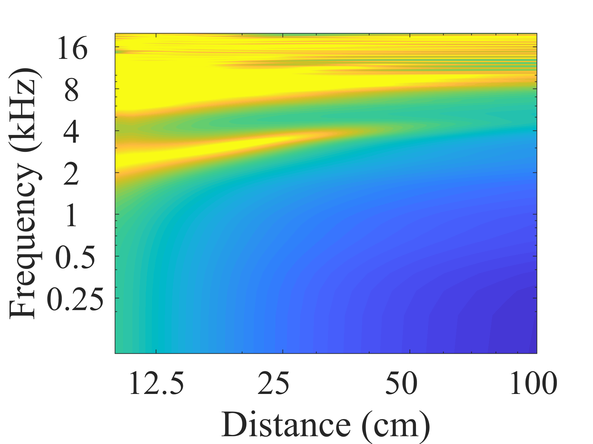 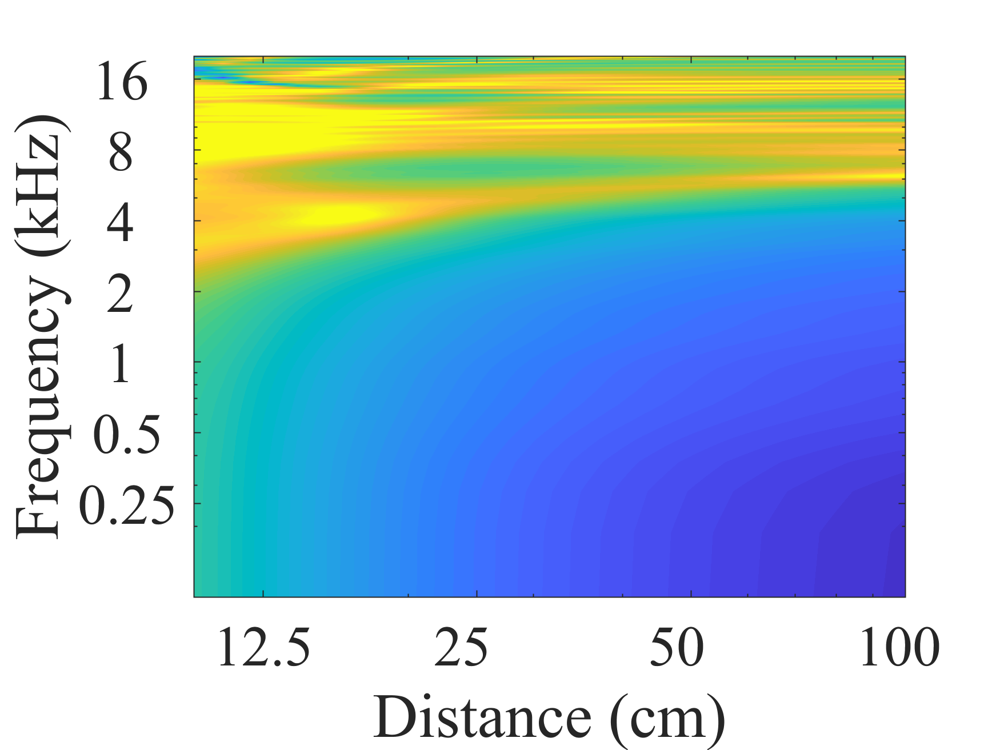 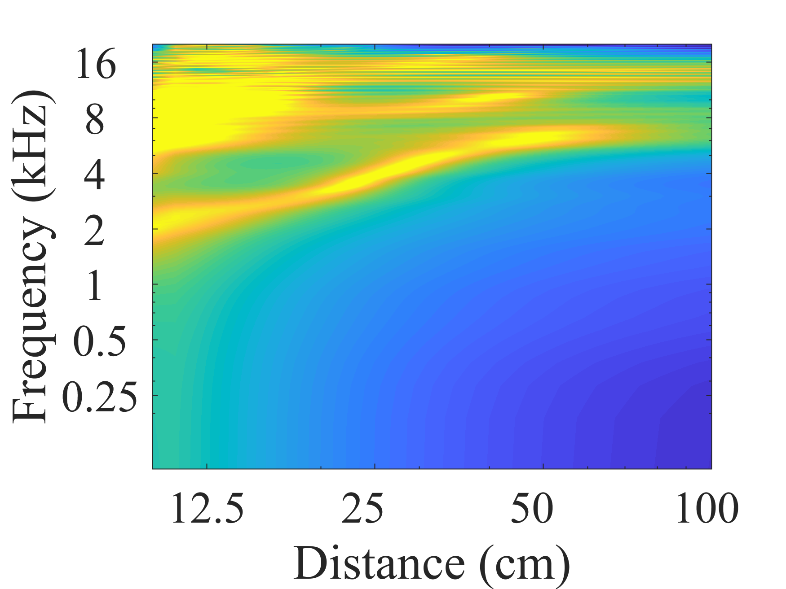
Circular and spherical HRIR datasets for one of the individual models (third from left in Fig. 1) are publicly available in the spatially-oriented format for acoustics (SOFA). Accessing the data requires MATLAB or GNU Octave. In addition, it is necessary to install the SOFA Matlab/Octave API version 1.0.2. The datasets can be downloaded from the links in Table 1.
| Source distribution | Description | SOFA File containing HRIRs and metadata | MATLAB Script to read SOFA File |
|---|---|---|---|
| 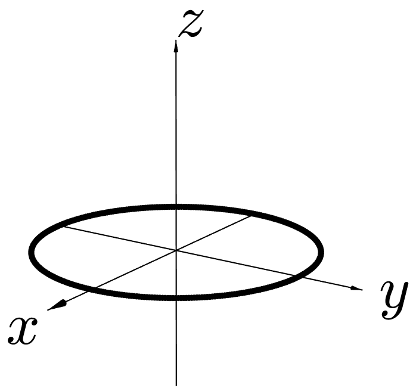 | Circular, equiangular distributions on the horizontal plane. | ind01_h_circ_hor_dir360_dist141.sofa | read_sofa_circ_hor.m |
| 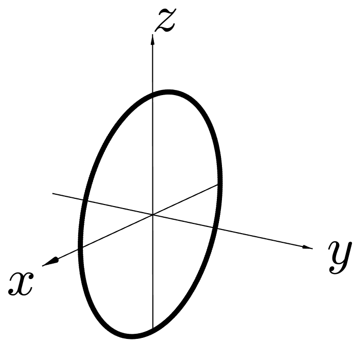 | Circular, equiangular distributions on the median plane. | ind01_h_circ_med_dir360_dist91.sofa | read_sofa_circ_med.m |
| 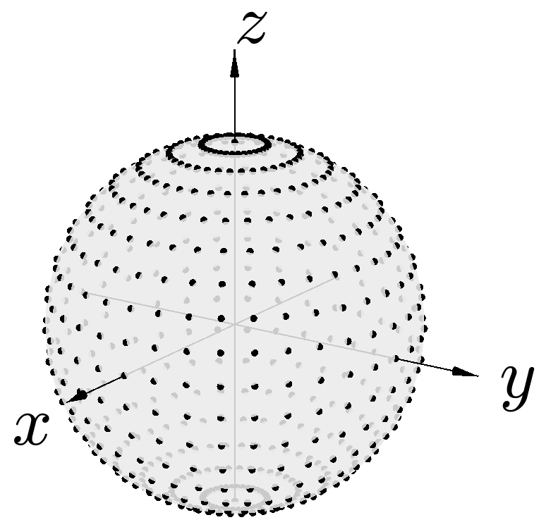 | Spherical, equiangular, vertical-polar distributions. | ind01_h_sph_equivert_dir614_dist91.sofa | read_sofa_sph_equivert.m |
| 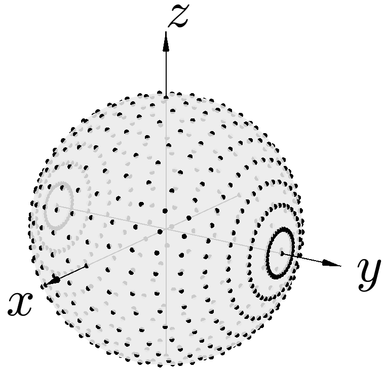 | Spherical, equiangular, interaural-polar distributions. | ind01_h_sph_equiint_dir614_dist93.sofa |
read_sofa_sph_equiint.m
cart2isph.m isph2cart.m |
| 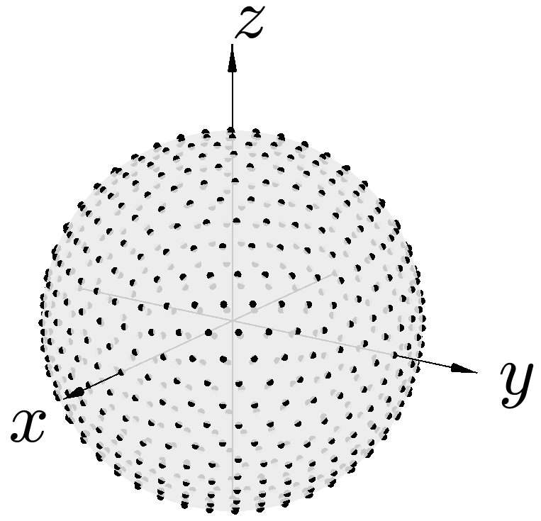 | Spherical, nearly-regular, icosahedral distributions. |
ind01_h_sph_ico_dir642_dist93.sofa
ind01_h_sph_ico_dir2562_dist21.sofa |
read_sofa_sph.m |
| 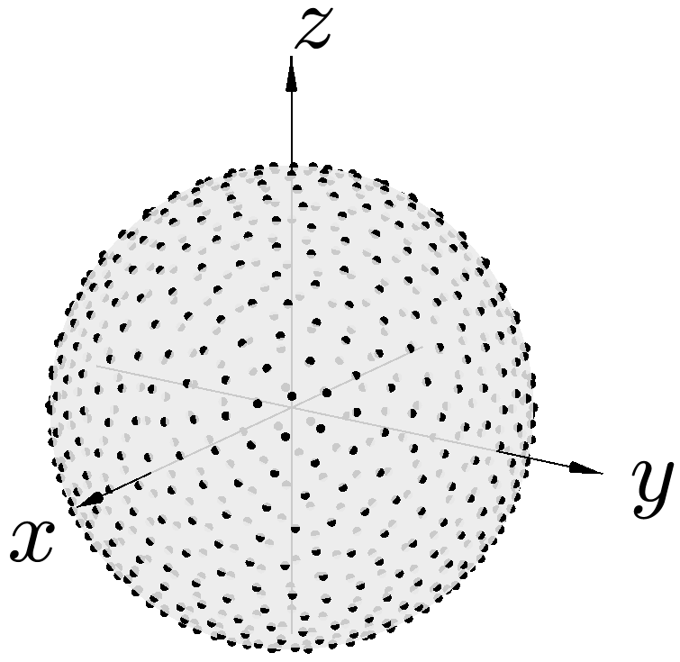 | Spherical, nearly-regular, maximum-determinant distributions. |
ind01_h_sph_md_dir625_dist93.sofa
ind01_h_sph_md_dir2500_dist21.sofa |